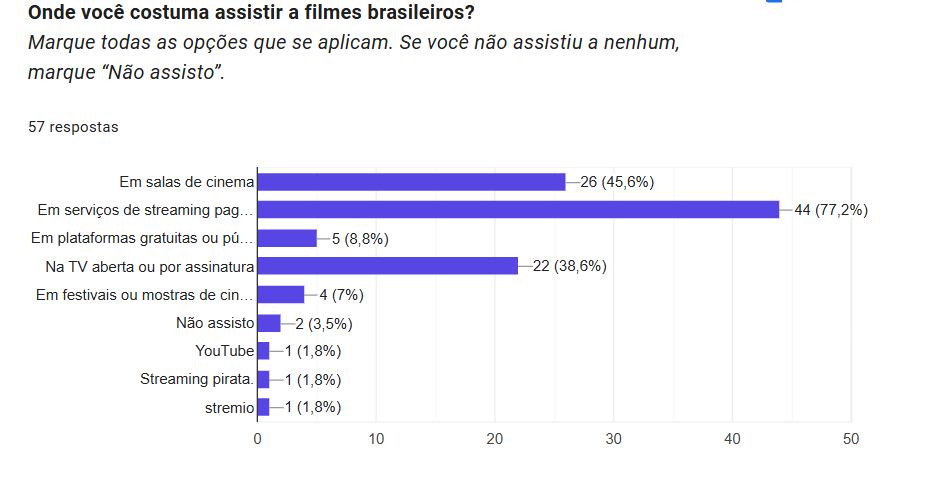
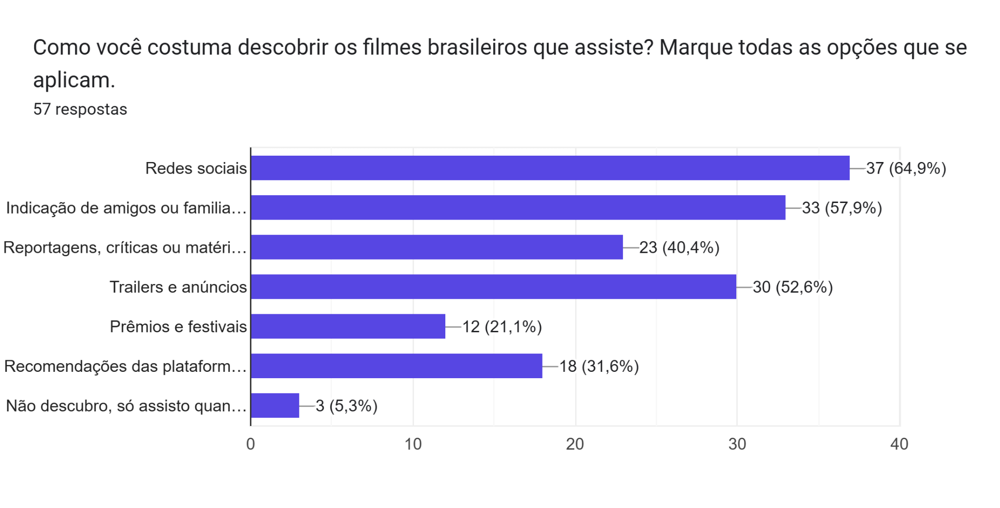
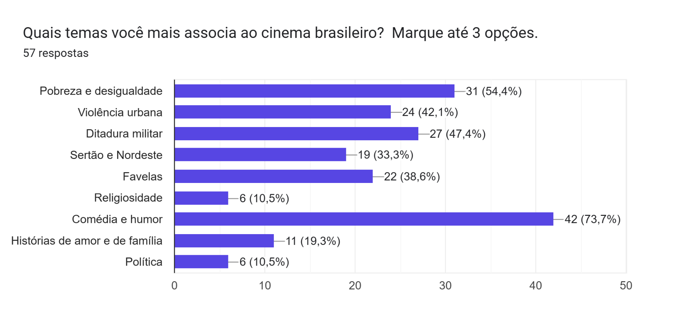
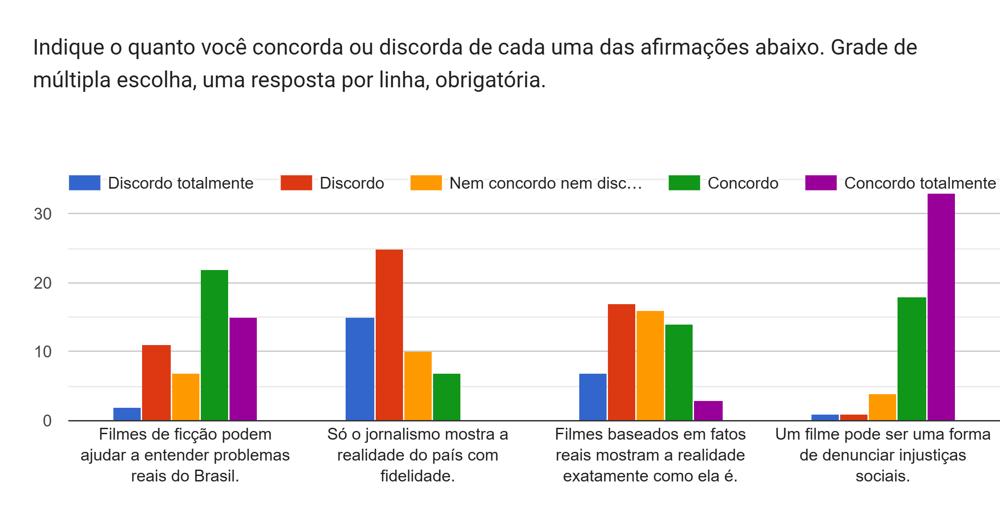
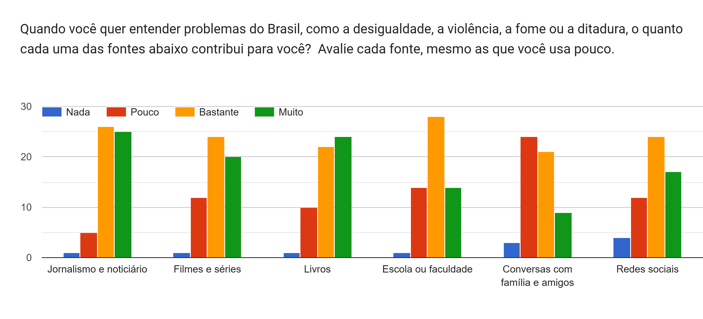
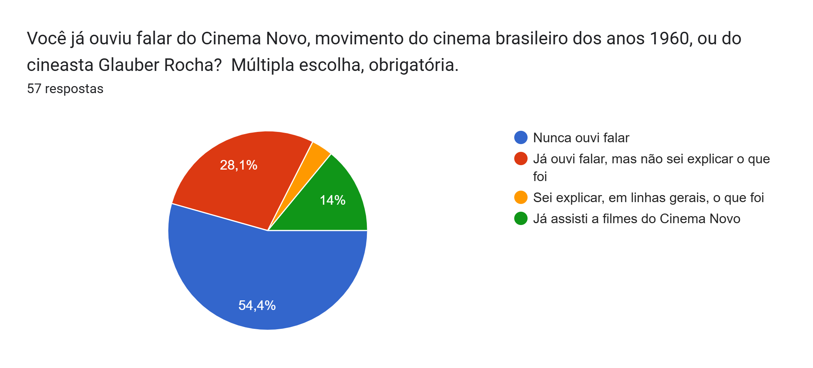

Quase nove em cada dez pessoas (89,5%) que responderam a uma pesquisa sobre cinema brasileiro concordam que um filme pode ser uma forma de denunciar injustiças sociais. Na mesma pesquisa, 82,5% disseram nunca ter ouvido falar do Cinema Novo ou não saber explicar o que foi o movimento que, nos anos 1960, fez da denúncia um projeto estético e político do cinema nacional.
O levantamento foi elaborado pela reportagem e aplicado por meio de um formulário online. Ele aponta uma tensão entre a confiança no poder do cinema e o conhecimento sobre a história desse cinema.
Como a pesquisa foi feita
O formulário, anônimo e criado no Google Forms, foi divulgado em grupos universitários, profissionais e pessoais. Responderam 57 pessoas. A maioria (56,1%) tem entre 18 e 24 anos, e 26,3% estudam ou trabalham com cinema, audiovisual ou jornalismo. A participação foi voluntária, e os resultados refletem a percepção de quem respondeu. Todos os percentuais apresentados nesta reportagem vêm dessa pesquisa, exceto quando indicado.
Streaming na frente, redes sociais como porta de entrada
Nos últimos 12 meses, 45,6% dos participantes assistiram a um ou dois filmes brasileiros, e cerca de 75% assistiram a no máximo cinco. A plataforma mais usada é o streaming pago, citado por 77,2% (cada pessoa podia marcar mais de uma opção), seguido pelas salas de cinema (45,6%) e pela TV aberta ou por assinatura (38,6%). Plataformas gratuitas ou públicas aparecem em 8,8% das respostas, e festivais ou mostras, em 7%.

Na hora de descobrir o que ver, as redes sociais lideram (64,9%), seguidas por indicações de amigos ou familiares (57,9%) e por trailers e anúncios (52,6%). Reportagens, críticas e matérias na imprensa foram citadas por 40,4%, o que significa que quatro em cada dez participantes chegam a filmes brasileiros por esse caminho. Prêmios e festivais, por sua vez, orientam 21,1%.

A comédia vem primeiro
Pediu-se aos participantes que marcassem até três temas que mais associam ao cinema brasileiro. A comédia e o humor foram os mais citados, por 73,7%. Em seguida vieram pobreza e desigualdade (54,4%), ditadura militar (47,4%), violência urbana (42,1%) e favelas (38,6%). O sertão e o Nordeste foram lembrados por 33,3%, as histórias de amor e de família por 19,3%, e a religiosidade e a política, por 10,5% cada.

Quando perguntados se o cinema brasileiro mostra o Brasil que reconhecem, 66,7% responderam “em parte”, 21,1% disseram que sim, “bastante”, e 12,3%, que pouco. Ninguém marcou “não”.
Um filme pode denunciar?
A afirmação com maior concordância da pesquisa foi a de que um filme pode ser uma forma de denunciar injustiças sociais: 89,5% concordam, dos quais 57,9% concordam totalmente. Só 3,5% discordam. Outros 64,9% concordam que filmes de ficção podem ajudar a entender problemas reais do Brasil, contra 22,8% que discordam.

As respostas sugerem que o público não toma o cinema como um espelho da realidade. Diante da frase “filmes baseados em fatos reais mostram a realidade exatamente como ela é”, as opiniões se dividiram: 42,1% discordam, 28,1% não concordam nem discordam e 29,8% concordam.
E o jornalismo?
Ao avaliar quanto cada fonte contribui para entender problemas como a desigualdade, a violência, a fome e a ditadura, o jornalismo e o noticiário tiveram a melhor avaliação: 89,5% disseram que contribui “bastante” ou “muito”. Os livros vieram em seguida (80,7%), depois filmes e séries (77,2%), escola ou faculdade (73,7%), redes sociais (71,9%) e conversas com família e amigos (52,6%).

A confiança no jornalismo, porém, não se traduz em exclusividade. Diante da afirmação “só o jornalismo mostra a realidade do país com fidelidade”, 70,2% discordam e 12,3% concordam. Na pergunta sobre qual frase se aproxima mais de sua opinião, 52,6% escolheram que jornalismo e cinema ajudam a entender o país, cada um à sua maneira, e 43,9% disseram que, às vezes, um filme toca mais as pessoas do que uma reportagem. Apenas 3,5% afirmaram que o jornalismo informa os fatos e o cinema serve principalmente para o entretenimento.
O movimento que ficou de fora
O Cinema Novo foi um movimento do cinema brasileiro dos anos 1960, ligado a cineastas como Glauber Rocha, que levou à tela a pobreza, a desigualdade e a violência do país com uma linguagem própria. Na pesquisa, 54,4% nunca ouviram falar do Cinema Novo ou de Glauber Rocha, e 28,1% já ouviram falar, mas não sabem explicar o que foi. Outros 3,5% disseram saber explicar, em linhas gerais, e 14% já assistiram a filmes do movimento.

O resultado contrasta com a confiança no poder de denúncia do cinema: a maior parte dos participantes acredita que um filme pode denunciar injustiças, mas não sabe nomear o movimento que, no cinema brasileiro, fez disso uma proposta. A pesquisa não permite explicar o motivo. O que os números mostram é a distância entre uma ideia amplamente aceita e a história de quem a levou para as telas.
A amostra é pequena e não é a régua para medir o que o país inteiro sabe ou pensa. Mesmo assim, o contraste que ela revela merece atenção: a ideia de que o cinema pode denunciar é consensual entre quem respondeu, enquanto o movimento que a transformou em projeto estético segue desconhecido para a maioria. Entre essas duas pontas fica a pergunta que a pesquisa deixa em aberto: de onde vem o que o público sabe, e o que não sabe, sobre o cinema que o país produz?